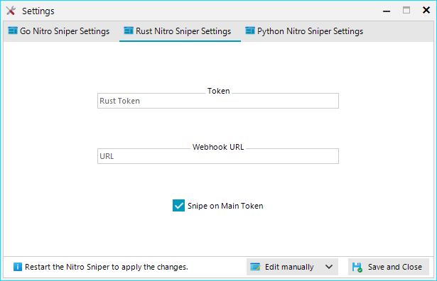
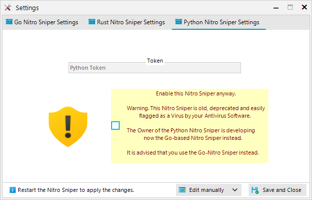

Nitro Sniper GUI Help |
Rust Help:
-
The Token Setting, allows the Nitro Sniper to log into your Discord Account, in order to snipe Discord Nitro. Don't worry, it won't get send to anyone else.
-
The Webhook Setting, allows you to send the Nitro Code to a Webhook, where your Main Token can claim it.
-
The Snipe on Main Token Setting, set's if either the Nitro Sniper should claim the Nitro Code, or not. Unchecking it will send the Nitro Code to the specified Webhook.

Python Help:
-
Information, using the Python-based Nitro Sniper can cause your Antivirus Software to detect and delete it. Because of that, you need to enable it first, by ticking the checkbox. See more info here
-
The Token Setting, allows the Nitro Sniper to log into your Discord Account, in order to snipe Discord Nitro. Don't worry, it won't get send to anyone else.
Note that the Python Nitro Sniper has been deprected since Nitro Sniper GUI Version 4.1
